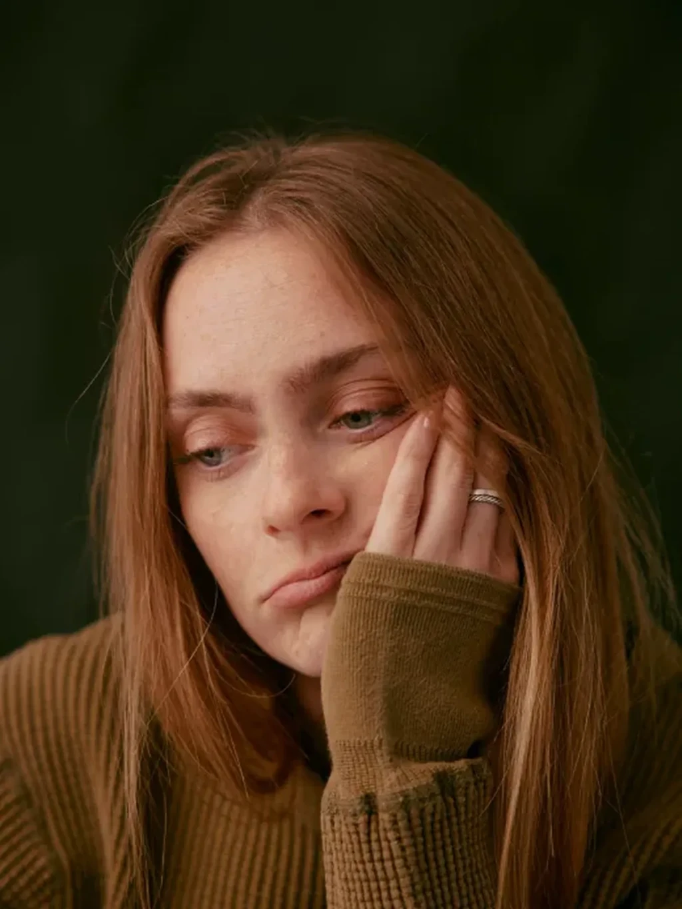

Coaching and consulting for anyone blocked on a creative project that matters.

Most advice hands you the same tired fix: push harder, want it more, power through. No pauses. No questions. We think that misses the point entirely. A block isn't a flaw to muscle past—it's a signal worth understanding before it's worth fixing. So we start earlier. We understand together what is stopping the work, and then get it moving. Coaching for the person, consulting for the project, often both. Stuck is temporary—let's go prove it.
Common enough to matter.
Complex enough to investigate.
Creative block remains under-researched, even if so many experience it. Occupational-psychology research points to burnout, perfectionism and identity fusion as the deeper drivers of distress in creative work—creative block is often the visible symptom, not the cause. We use the evidence carefully and say where its limits are.

We look at who you are and how you're doing, so what we build actually fits you.
Eight ways creative work gets stuck.
Seven domains where creative work gets stuck, plus one look-alike that isn't a block at all. Same stuck feeling, very different causes — so we read the mechanism before we suggest anything.
Let's unlock what's stuck.
Bring the work that matters. We’ll help you understand what is keeping it stuck and choose a useful next move.
The things people ask first.
Coaching and creative consulting—not therapy. We work on the block and the project in front of you. If something sits deeper than our remit, we will say so and help you find the right support.
No. If you make things—work, research, a business, a body of writing—and you are stuck on something that matters, this is for you. You do not need to call yourself an artist.
We find the most likely mechanism behind the stuckness, read the terrain around it, and match a response—coaching, consulting, learning or recovery. You leave with a clear read and a sensible first move.
Yes. For organisations we run workshops, resets and ongoing advisory—working on briefs, feedback, roles and pace, not just individual output.
Bring the project that matters, and we'll find what is really keeping it stuck.